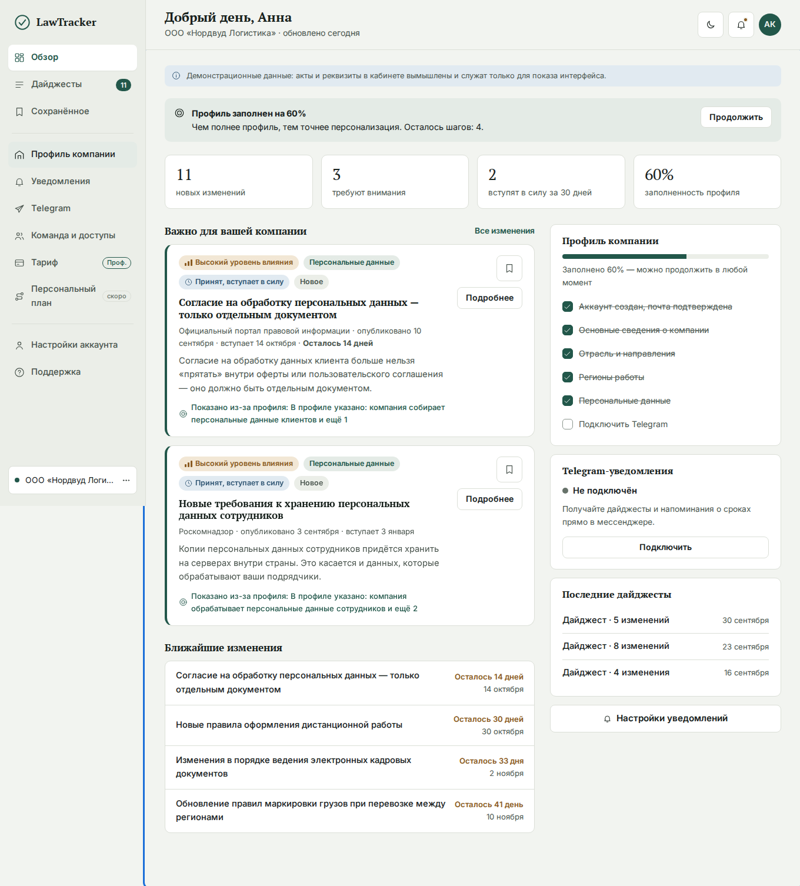
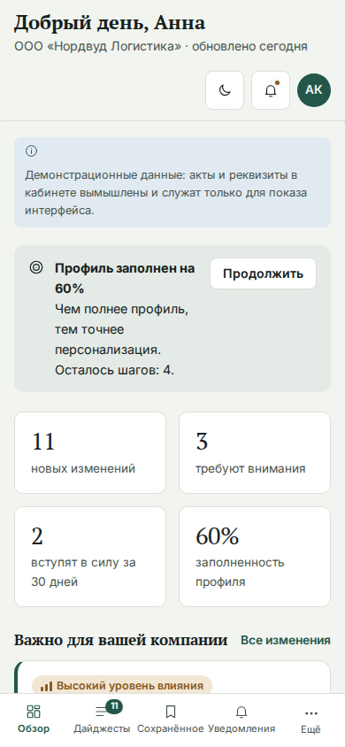
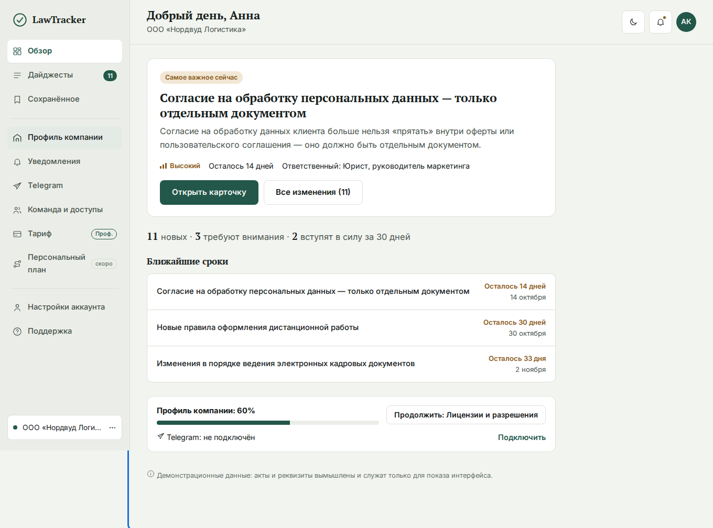
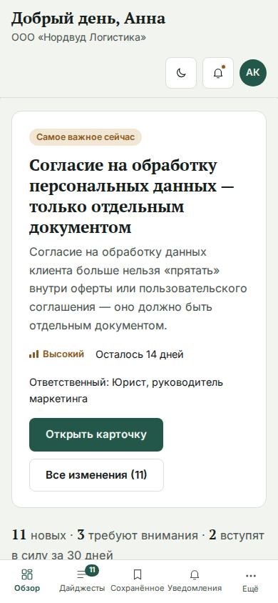
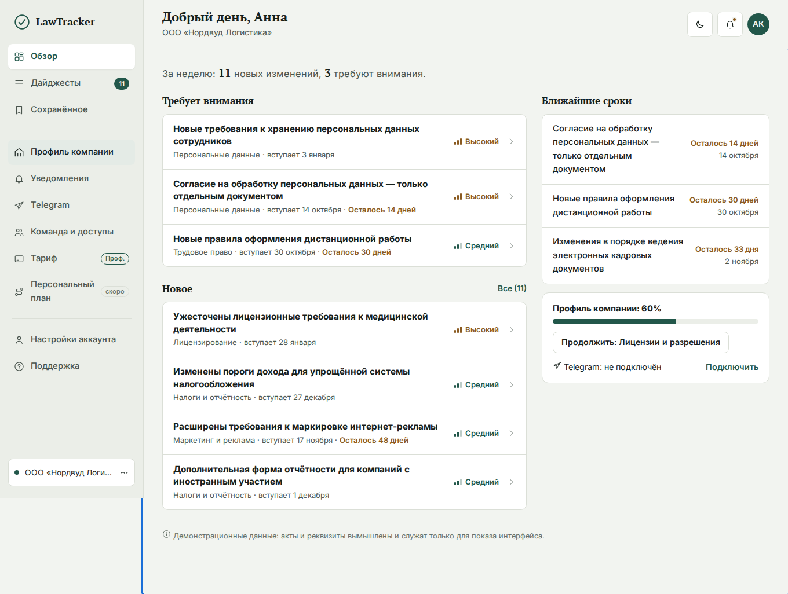
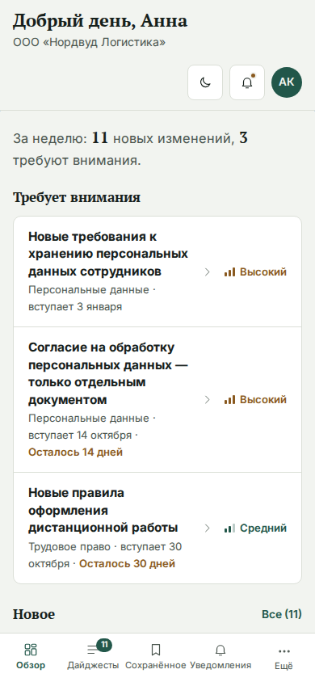
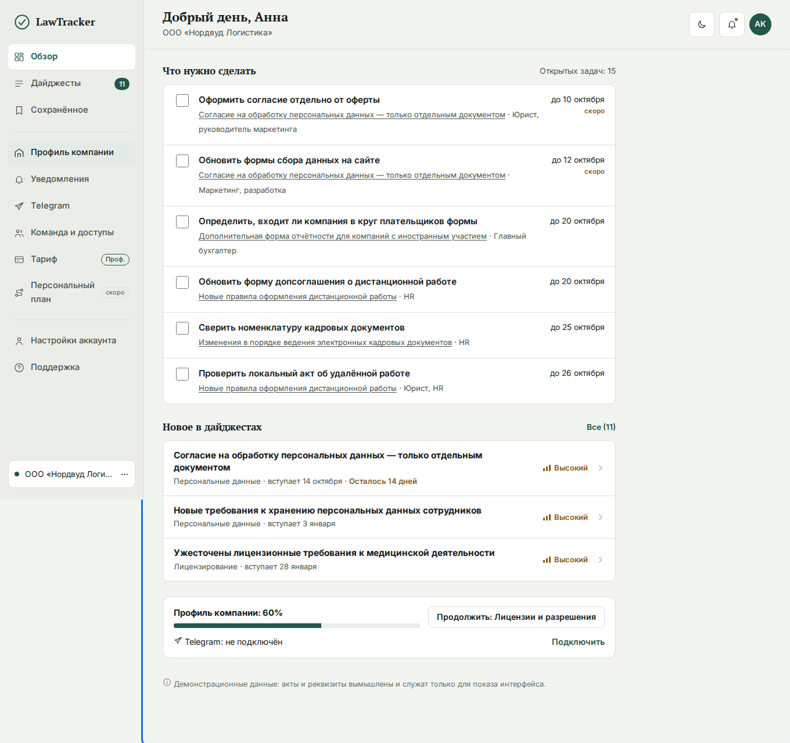
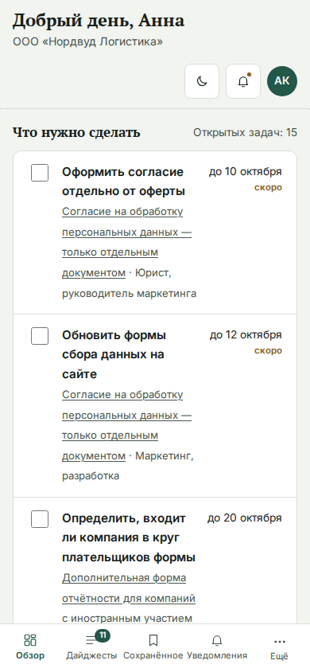
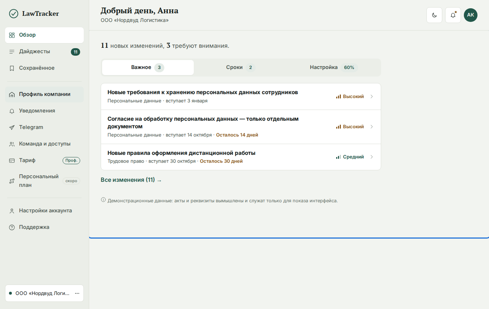
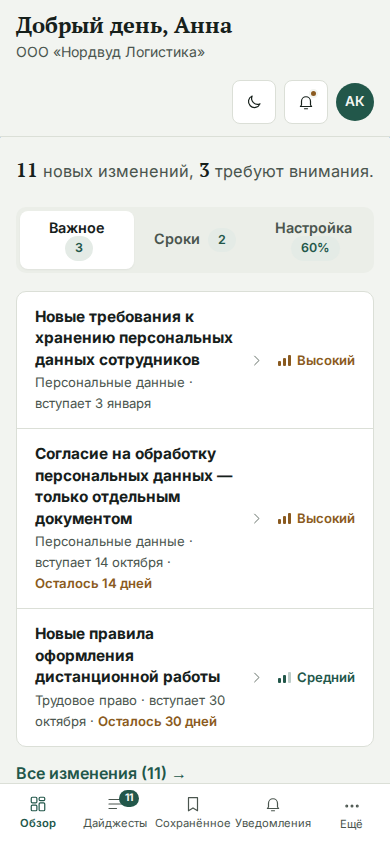

Архив. На сайте выбран и внедрён вариант «Лента и сводка», остальные из кода удалены. Ниже — четыре более лёгких варианта рядом с текущим. Принцип: показывать меньше и раскрывать детали по запросу, чтобы сразу отвечать на вопросы «Что нового?» и «Что требует моего внимания?» из ТЗ. Высота экрана на десктопе указана для сравнения.
Что на экране: 4 плитки статистики, 2 полные карточки с тегами и абзацами, список сроков, 3 виджета справа.
Плюсы: Всё сразу, знакомо.
Минусы: Много блоков одного веса: не видно, с чего начать.


Что на экране: Одна главная карточка «Самое важное сейчас» с кнопкой, строка с цифрами, 3 ближайших срока, одна полоса про профиль и Telegram.
Плюсы: Один понятный следующий шаг, меньше решений. Самый спокойный.
Минусы: Остальные изменения видны только через «Все изменения».


Что на экране: Компактные строки вместо карточек: «Требует внимания» и «Новое», справа сроки и настройка одним блоком.
Плюсы: Быстро просматривать много изменений, сохраняет две колонки.
Минусы: Нет пояснений в строках; за кратким выводом нужно открыть карточку.


Что на экране: Главное — список действий с чекбоксами, сроками и ответственными; ниже три новых изменения.
Плюсы: Практическая польза (принцип ТЗ): сразу видно, что и к какому сроку сделать.
Минусы: Подходит, когда у клиента уже есть изменения с действиями; для нового клиента список пуст.


Что на экране: «Важное», «Сроки», «Настройка»: на экране только одна тема, остальное в один клик.
Плюсы: Самый короткий экран, отлично на телефоне.
Минусы: Скрывает информацию, лишний клик для сроков и настройки.

